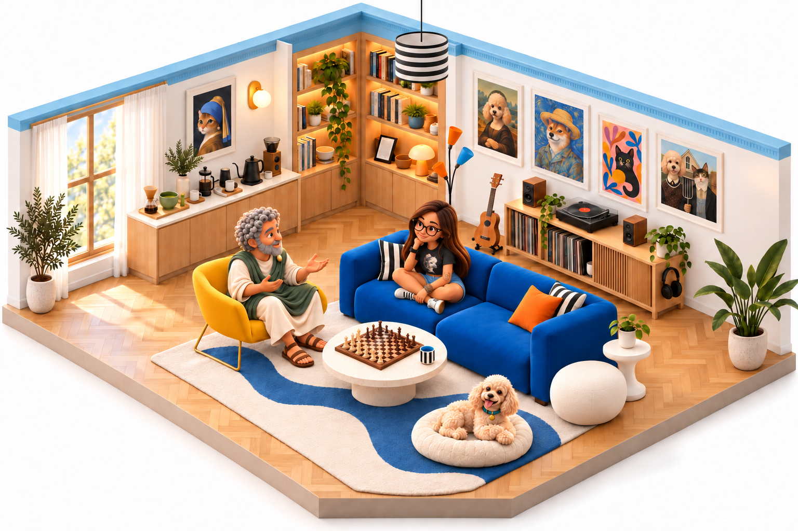

01 / EL SALÓN DE LAS IDEAS
Dándole forma a mi universo· · ·

Explora cada rincón con los botones de abajo.
↔ Guía a mi poodle por el salón · Arrastra para girar
Pasa, estás enmi cabeza.
01 · Café & matcha
Aquí no hay prisa.
Hay agua caliente, una balanza y la paciencia de esperar a que el café diga lo suyo.
02 · Mi música
Lado A.
Ukelele hace un par de años, el piano en la lista y rock argentino de fondo.
03 · Biblioteca y setup
Lo que enseño, lo que construyo.
Y las herramientas con que lo hago: datos, código y un poco de 3D.
04 · Mi compañero
Puyol 2016 — 2025.
Mi cable a tierra durante nueve años.
01 · El tablero
Datos que cuentan algo.
Tableros en Power BI que responden preguntas de verdad.
02 · La pizarra
Datos → decisiones.
Y casi siempre, una pregunta nueva.
03 · Lo que me forma
Ingeniería, MBA y diplomados.
Todo en la Universidad Privada Boliviana.